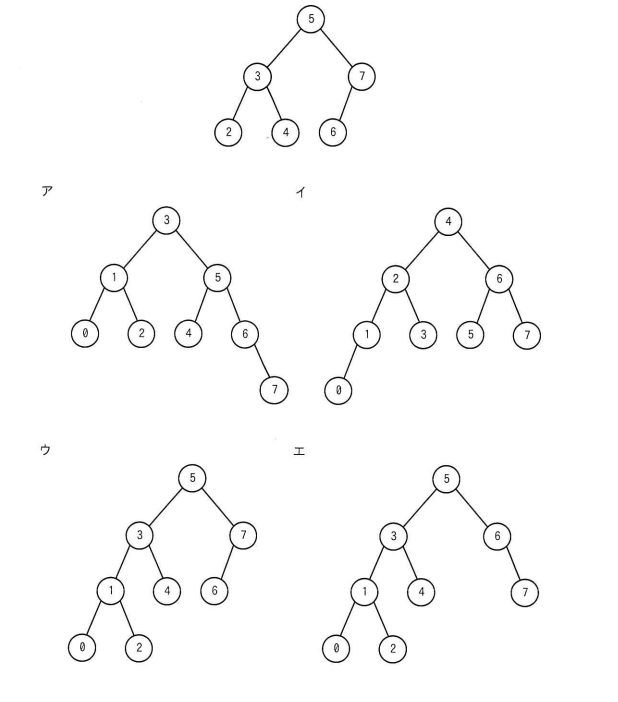

図の2分探索木に1と0の二つの要素を順に追加したAVL木として，適切なものはどれか。
（初期の2分探索木：ルート5、左部分木は3(左2, 右4)、右部分木は7(左6)）
選択肢ア〜エはそれぞれ異なる木構造（詳細は参照画像参照）。

ウ
最終的な木構造：
5
/ \
3 7
/ \ /
1 4 6
/ \
0 2
| 選択肢 | 内容 | 補足 |
|---|---|---|
| ア | ルートが3 | 元の木全体が過剰に再構成された形になっており、AVL木の局所的な回転規則と一致しない |
| イ | ルートが4 | 元の木全体が過剰に再構成された形になっており、AVL木の局所的な回転規則と一致しない |
| ウ | 5-(3,7)，3-(1,4)，1-(0,2)，7-(6) | 正解。1挿入後に2の左部分木の高さ超過が発生し、2を根とする部分木で右回転を行うことでバランスを回復した結果と一致 |
| エ | 5-(3,6)，6-(右に7) | 右側部分木の構造が誤っており、6の位置・7の接続が実際のシミュレーション結果と異なる |
出典：2025年度 秋期 応用情報技術者試験 午前 問6（IPA）